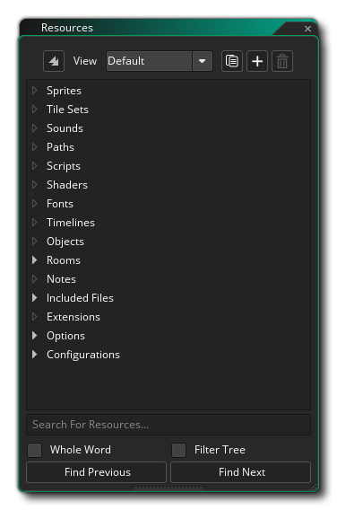
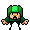

Der Kern Ihres Spiels wird aus Assets erstellt, die zum Ressourcenbaum hinzugefügt wurden. Hier kannst du alles hinzufügen, was dein Spiel benötigt, einschließlich eines Spielraums, Sprites, Objekte, Wege und eine Menge anderer Dinge. Ein grundlegendes Spiel in GameMaker Studio 2 erfordert einen Raum zum Ausführen und in der Regel mindestens ein Objekt und ein Sprite, obwohl Sie wahrscheinlich viel mehr verwenden werden!  Sie können dem Ressourcenbaum eine Ressource hinzufügen, indem Sie mit der rechten Maustaste klicken  Klicken Sie darauf und wählen Sie die Option Erstellen aus dem Popup-Menü (für weitere Details zu diesem Popup-Menü, siehe unten). Dies gilt für alle verfügbaren Ressourcen, aber jeder hat seinen eigenen eindeutigen Editor, der geöffnet wird, wenn Sie dies tun. Beachten Sie, dass Sie oben links im Ressourcenbaum die Schaltfläche Alles reduzieren haben
Klicken Sie darauf und wählen Sie die Option Erstellen aus dem Popup-Menü (für weitere Details zu diesem Popup-Menü, siehe unten). Dies gilt für alle verfügbaren Ressourcen, aber jeder hat seinen eigenen eindeutigen Editor, der geöffnet wird, wenn Sie dies tun. Beachten Sie, dass Sie oben links im Ressourcenbaum die Schaltfläche Alles reduzieren haben  mit dem alle geöffneten Ressourcenordner geschlossen werden können.
mit dem alle geöffneten Ressourcenordner geschlossen werden können.
Sie können eine kurze Übersicht über alle verfügbaren Ressourcen aus dem Ressourcenbaum anzeigen, indem Sie auf eine der folgenden Schaltflächen klicken:
Sprites sind im Allgemeinen die visuellen Darstellungen von Objekten in den von dir erstellten Spielen. Ein Sprite ist ein Bild, das mit dem GameMaker Studio 2 Bildeditor erstellt oder mit einem externen Zeichenprogramm erstellt und in GameMaker Studio 2 importiert wird. Das verwendete Bild muss auch nicht von einer statischen Sache sein... es kann auch ein "Streifen" -Bild sein, dh mehrere Bilder in einer einzigen Datei, die dann verwendet werden können, um ein einzelnes animiertes Sprite zu erzeugen. Zum Beispiel bilden die folgenden 10 Bilder ein Sprite für einen Charakter, der beim Fallschirmspringen mit den Armen winkt.
Und die eigentliche fertige Animation würde so aussehen, wenn sie in einem Spiel platziert wird:

Ein Sprite wie dieser ist normalerweise ein PNG Formatdatei, aber GameMaker Studio 2 akzeptiert auch Vektorsprites in SWF Format und Spine sprites in JSON (mit ihrer begleitenden Textur Atlas-Datei).
Weitere Informationen zum Hinzufügen von Sprites finden Sie im Abschnitt zum Sprite-Editor.
Kachelsätze werden aus den Sprite-Ressourcen genommen, aber als separate Ressource klassifiziert, da GameMaker Studio 2 sie beim Erstellen Ihres Spiels anders handhaben wird. Im Grunde genommen handelt es sich bei einem Kacheln-Set um ein einzelnes Bild, das GameMaker Studio 2 basierend auf den Werten, die Sie für die verschiedenen Einstellungen GameMaker Studio 2, in separate Abschnitte aufteilt. Sie können diese dann im Raumeditor (oder prozedural über Code) verwenden, um eine Kachelkarte in Ihrem Raum zu erzeugen. Sie eignen sich hervorragend zum Entwerfen von statischen Objekten in Ihrem Raum, wie z. B. Gelände, Wände, Hintergründe usw., da sie nicht den gleichen Overhead haben wie Objekte.
Oben ist ein Beispiel-Sprite, das als eine Kachel zum Erstellen von Wänden verwendet wird. Wie Sie sehen können, kann es in 64x64pixel Chunks "aufgeteilt" werden, die dann in den Raumeditor gestellt werden.HINWEIS: Kacheln sind immer quadratisch. Wenn Sie also etwas anderes benötigen, sollten Sie im Raumeditor eine Instanz mit einem Sprite oder einer Asset-Ebene verwenden.
Weitere Informationen zum Hinzufügen von Kacheln finden Sie im Abschnitt zum Kachelsatz-Editor.
Sound ist ein wichtiger Bestandteil jedes Spiels, sowohl um Depoth zum Gameplay hinzuzufügen als auch Feedback in Form von Soundeffekten zu geben und um Atmosphäre in Form von Musik hinzuzufügen. GameMaker Studio 2 akzeptiert WAV, MP3 und OGG Dateien formatieren.
Im Algemeinen, WAV Dateien werden für kurze Soundeffekte verwendet, obwohl sie in der Regel größere Dateien sind, weil sie für die Wiedergabe keine Decodierung benötigen. MP3 und OGG Dateien sollten für Hintergrundmusik oder einen Effekt verwendet werden, der über einen längeren Zeitraum abgespielt wird oder eine ziemlich große Dateigröße hat. Diese Dateien sind viel kleiner als a WAV Datei und haben jedoch einen CPU-Overhead mit ihnen verbunden, da sie vor dem Abspielen decodiert werden müssen.
Weitere Informationen zum Hinzufügen von Sounds finden Sie im Abschnitt zum Sound-Editor.
Zu einem bestimmten Zeitpunkt während der Erstellung Ihrer Spiele benötigen Sie möglicherweise eine Instanz eines Ihrer Objekte, um einem Pfad durch eine Ebene zu folgen. Nun kann dies erreicht werden, indem einfach eine Anordnung von Positionen innerhalb des Raums erzeugt wird und dann die Instanz zwischen ihnen bewegt wird, aber das kann eine mühsame Aufgabe sein und ist schwierig zu verändern, zu testen und für verschiedene Dinge anzupassen. Das ist, wenn Sie eine Pfadressource erstellen möchten.
Die Grundidee der Pfadressource ist ziemlich einfach: Sie definieren einen Pfad, indem Sie ihn im Pfadeditor zeichnen. Anschließend können Sie eine Aktion (oder einen Code) in ein Ereignis eines Objekts einfügen, um dem Objekt zu sagen, dass es diesem Pfad folgen soll Spielzimmer. Sie können die Geschwindigkeit so einstellen, dass sie dem Pfad und einer Anzahl anderer Aktionen folgt, die sich auf die Position und Orientierung des Pfades innerhalb des Raums beziehen.
Weitere Informationen zum Hinzufügen von Pfaden finden Sie im Abschnitt zum Pfad-Editor.
Eine Skript-Ressource ist eine Sammlung von Codes, die Sie geschrieben haben, um eine eigene Funktion zu erstellen. Angenommen, Sie möchten, dass ein Feind eine Reihe von Instanzen erstellt, wenn er stirbt, wie zum Beispiel Gold, eine Explosion und etwas Blut, und einen Ton abspielen. Jetzt könnten Sie allen erforderlichen Code zu jedem Objekt hinzufügen, das es erfordert, aber im Allgemeinen sollten Sie besser eine einzige Skript-Ressource mit dem darin enthaltenen Code erstellen und diese dann aufrufen. Das bedeutet, dass Sie den Objekten nur eine Codezeile hinzufügen müssen, um diese neue Skriptfunktion aufzurufen. Wenn Sie etwas ändern möchten, müssen Sie es nur einmal im Skript ändern, und alle Objekte führen automatisch den neuen Code aus. anstatt jedes Objekt durchlaufen zu müssen und an mehreren Stellen dasselbe zu ändern.
Weitere Informationen zum Hinzufügen von Pfaden finden Sie im Abschnitt zum Skript-Editor.
Shader sind ein sehr leistungsfähiges Werkzeug, mit dem Sie die Grafiken bearbeiten können, die Ihr Spiel auf dem Bildschirm darstellt. Dies ermöglicht unglaublich schnelle Effekte, die z. B. einen subtilen Farbton zu einem Sprite hinzufügen können, bis hin zu Vollbildverzerrungseffekten. Im Grunde genommen handelt es sich um ein zweiteiliges Programm, das direkt auf der Grafikkarte läuft, was es sehr schnell macht, da die GPU die ganze Arbeit macht und CPU-Zyklen für Ihren Spielcode freigibt. Der vollständige Shader besteht aus einem Vertex-Shader-Programm und einem Fragment-Shader-Programm (auch bekannt als Pixel-Shader). Beide kleinen Programme arbeiten zusammen, um zu manipulieren, was die Grafikkarte auf dem Bildschirm rendert. Dies ermöglicht Ihnen dann, die Positions-, Farb- und Alphawerte, die tatsächlich in den Anzeigepuffer gerendert werden, in Echtzeit zu manipulieren.
GameMaker Studio 2 unterstützt die folgenden Shader-Sprachen:
Shader-Sprache Zielplattform GLSL ES Alle Zielplattformen GLSL Mac und Ubuntu (Linux) HLSL11 Windows, UWP, Xbox One PSSL Playstation 4
Weitere Informationen zum Hinzufügen von Shadern finden Sie im Abschnitt zum Shader-Editor.
Wenn Sie Text in Ihrem Spiel zeichnen möchten, wird dieser Text standardmäßig in einer Arial 12-Punkte-Schriftart gezeichnet, aber um interessantere oder einzigartig aussehende Texte zu erstellen, werden Sie wahrscheinlich verschiedene Schriftarten verwenden wollen. Hier wird der Font-Editor verwendet. Hier können Sie eine Schriftart auswählen, die Sie auf Ihrem Computer haben, und sie in GameMaker Studio 2 zur Verwendung in Ihrem Spiel importieren, indem Sie verschiedene Attribute wie Größe und Gewicht oder Stil festlegen. Nach dem Importieren und Hinzufügen als Ressource können Sie sie mit dem entsprechenden Code oder den entsprechenden Aktionen für das Zeichnen festlegen.HINWEIS: Wenn Sie Ihrem Spiel Schriftarten hinzufügen, stellen Sie sicher, dass Sie über die erforderliche Lizenz verfügen, um es erneut zu verteilen, es sei denn, es handelt sich um eine public domain oder um ein Copyright.
Weitere Informationen zum Hinzufügen von Zeichensätzen finden Sie im Abschnitt zum Zeichensatzeditor.
In den meisten Spielen möchten Sie bestimmte Dinge zu bestimmten Zeitpunkten passieren. Jetzt können Sie versuchen, dies zu erreichen, indem Sie die Alarm-Ereignisse in einer Instanz verwenden, aber wenn die Dinge zu kompliziert werden, wird dies nicht mehr funktionieren, zumal Sie auf nur zwölf Alarme beschränkt sind. Deshalb haben wir die Timeline-Ressource. In einer Zeitleiste legen Sie fest, welche Aktionen zu einem bestimmten Zeitpunkt in der Spielzeit ausgeführt werden müssen, und Sie können alle Aktionen verwenden, die für ein Objekt in seinen verschiedenen Ereignissen sowie für Code verfügbar sind. Sobald Sie eine Zeitlinie erstellt haben, können Sie diese einem Objekt zuweisen, und die Instanz dieses Objekts führt dann die Aktionen und den Code zu den angegebenen Zeitpunkten aus, wenn sie in einem Raum platziert oder erstellt werden.
Weitere Informationen zum Hinzufügen von Schnittfenstern finden Sie im Abschnitt zum Timeline-Editor.
Objekte sind eine spezielle Ressource, mit der wir Aspekte eines Spiels steuern und bestimmte Dinge tun können. Die meiste Zeit haben sie ein Sprite mit ihnen verbunden, so dass Sie sie im Spielzimmer sehen, aber manchmal werden sie als "hinter den Kulissen" Controller verwendet, um Dinge in Bezug auf den Benutzer oder für das Timing usw. zu tun Sie können Verhaltensweisen erhalten und auf bestimmte Ereignisse sowie auf einander reagieren. Die meisten Dinge, die Sie in einem Spiel sehen, basieren auf Objekten und ihren Interaktionen. Beachten Sie, dass wir "basierend auf" sagen, weil Sie Objekte nicht direkt in das Spielzimmer platzieren, sondern stattdessen Instanzen dieser Objekte platzieren, die im Grunde Kopien (oder Klone, wenn Sie bevorzugen) der Objektressource sind. Dies ist eine sehr wichtige Sache, die man sich merken sollte, da Instanzen und Objekte nicht die gleiche Sache sind und jede ihre eigenen Funktionen hat, die sie beeinflussen können.
Alle Objekte haben eine Reihe von Eigenschaften, die Sie im Objekteditor angeben können, wie das Sprite, ob es Physik verwendet oder nicht, oder ob es ein "Kind" -Objekt eines anderen ist. Sie haben auch eine Reihe von eingebauten Variablen, die dann in Aktionen, Skripten und Code verwendet werden können. Diese eingebauten Variablen werden verwendet, um die Position der Instanz zu definieren, wenn sie im Spielzimmer platziert wird, die Animationsgeschwindigkeit, die Bewegungsrichtung und eine ganze Menge anderer Dinge. Um zu steuern, wie sich das Objekt im Laufe der Zeit verhält, wird jeder Spiel-Frame in eine Reihe von Ereignissen aufgeteilt, sodass Sie Code oder Aktionen zu einem bestimmten Ereignis hinzufügen können und nur ausgeführt werden, wenn das Ereignis ausgelöst wird und Ereignisse ausgelöst werden können Maustaste drückt oder Kollisionen mit anderen Instanzen.
Objekte sind in einem sehr realen Sinne die Bausteine Ihres Spiels und bilden zusammen mit Räumen den Kern jedes von Ihnen erstellten Projekts.
Weitere Informationen zum Hinzufügen von Objekten finden Sie im Abschnitt zum Objekt-Editor.
Alle Spiele, die Sie in GameMaker Studio 2 GameMaker benötigen mindestens einen Raum (der aber viele, viele mehr haben kann), und ein Raum ist im Grunde ein Raum, in dem Sie Instanzen der Objekte platzieren, aus denen Ihr Spiel besteht das Spiel wird stattfinden. Der Raum-Editor ist jedoch eine der mächtigsten Ressourcen, die Ihnen zur Verfügung stehen, da Sie nicht nur Instanzen von Objekten hinzufügen können, sondern die "Ansicht" in das Spielzimmer einfügen und die hinzugefügten Hintergründe und Kacheln hinzufügen erstelle die Spielwelt, erstelle extra Spezialeffekte, die unabhängig vom Objekt / Instanz-System sind, und führe Code unabhängig von einem Objekt aus. Die Zimmer können auch erben Eigenschaften von anderen Räumen eingestellt werden, was bedeutet, dass Sie ein Einzelzimmer mit einer Belastung von Fliesen, zum Beispiel erstellen, und dann einen anderen Platz machen, die diese Fliesen erbt, so dass Sie müssen nicht neu erstellen die schon wieder.
Weitere Informationen zum Hinzufügen von Räumen finden Sie im Abschnitt zum Raum-Editor.
Notizen sind einfach Code-Editor-Fenster, die Ihnen erlauben, alles zu schreiben. Sie sind als Ablage für Code-Snippets, Spielinformationen, To-Do-Listen, Team-Kommunikation usw. gedacht.
Weitere Informationen zum Hinzufügen von Notizen finden Sie im Abschnitt zum Notes Editor.
Enthaltene Dateien sind, wie der Name schon sagt, alle Dateien, die beim Export des Spiels auf die Zielplattform in das Spielpaket integriert werden sollen. Diese Dateien können von Textdokumenten über Bilder bis hin zu gezippten Dateien reichen und können mit den verschiedenen Dateifunktionen gemäß den Regeln des Dateisystems aufgerufen werden.
Weitere Informationen zum Hinzufügen von Dateien finden Sie im Abschnitt zu den enthaltenen Dateien.
Erweiterungen sind zusätzliche Dateien und Code, den Sie hinzufügen, können die erweitern GameMaker Studio 2 Funktionalität sowie Assets hinzufügen, um Ihr Spiel aus dem Marktplatz. Das Format für eine Erweiterung hängt von der endgültigen Zielplattform ab, obwohl sie im Allgemeinen in C ++, C # oder JavaScript geschrieben sind, das dann mit bestimmten Funktionen in GML analysiert wird.
Weitere Informationen zum Hinzufügen von Erweiterungen finden Sie im Abschnitt zum Erweiterungseditor.
Die Spieloptionen Ressource als Ganze für das Projekt von einer Reihe von verschiedenen Optionen enthalten und für jede Zielplattform, die Sie mögen, zu exportieren. Unabhängig von den Plattformen, die Sie zur Verfügung haben, haben Sie immer eine Hauptspieloption Ressource für den Aufbau projektspezifische Dinge wie die Spielgeschwindigkeit. Weitere Informationen finden Sie im Abschnitt zu den Spieloptionen.
Hier können Sie eine Konfiguration auswählen oder erstellen, die Sie für den Ressourcenbaum und anschließend für Ihr gesamtes Projekt verwenden möchten. Zu Beginn sind die Konfigurationen vielleicht nicht so wichtig, aber wenn die Komplexität und Anzahl der projizierten Zielplattformen wächst, werden Sie feststellen, dass sie ein unschätzbares Werkzeug beim Organisieren und Exportieren Ihrer Spiele sind. Im Wesentlichen speichern sie die aktuelle Konfiguration der verschiedenen Spieloptionen und Exportoptionen für den Ressourcenbaum, was bedeutet, dass Sie eine spezifische Konfiguration für Android, eine andere für Windows usw. haben können. Weitere Informationen finden Sie auf der Seite zu Konfigurationen.

Wenn Sie eine detailliertere Anleitung dazu benötigen, wie Sie die verschiedenen hier aufgeführten Editoren verwenden, sollten Sie den Abschnitt des Handbuchs lesen, der sie hier ausführlicher erläutert:
RMB-Menü
Wenn Sie mit dem Ressourcenbaum arbeiten, können Sie die rechte Maustaste verwenden  auf einer Ressource oder einem Ordner, um ein Menü mit Optionen zu öffnen:
auf einer Ressource oder einem Ordner, um ein Menü mit Optionen zu öffnen:  Die verfügbaren Optionen sind:
Die verfügbaren Optionen sind:
- Erstellen - Erstellen Sie eine neue Ressource des Typs, auf den Sie geklickt haben, um das Menü zu öffnen.
- Eigenschaften öffnen - Öffnen Sie den Editor für Ressourceneigenschaften für die angeklickte Ressource (beachten Sie, dass Sie doppelklicken können)
 auch).
auch). - Vorhandene hinzufügen - Fügen Sie eine vorhandene Ressource aus einem anderen GameMaker Studio 2 Projektordner hinzu.
- Bestehende aus meiner Bibliothek hinzufügen - Fügen Sie Ressourcen zu der Struktur aus einem Asset in Ihrer Marketplace-Bibliothek hinzu.
- Erweiterung importieren - Importieren Sie eine Erweiterung in Ihr Projekt (nur in der Ressource " Erweiterungen" verfügbar).
- Gruppe hinzufügen - Fügen Sie der Struktur an der angeklickten Position einen neuen Ressourcengruppenordner hinzu.
- Umbenennen - Benennen Sie die Ressource oder den Gruppenordner um.
- Löschen - Löscht die Ressource aus dem Projekt (dadurch wird sie vollständig entfernt, es sei denn, Sie befinden sich in einer anderen Projektansicht als der Standardansicht - siehe unten).
- Duplizieren - Erstellen Sie ein Duplikat der Ressource, auf die geklickt wurde.
- Im Explorer öffnen - Öffnet den Datei-Explorer am Speicherort der Datei, die für die Ressource in Ihrem Projektordner gespeichert wurde.
Beachten Sie, dass nicht alle Optionen für alle Ressourcen verfügbar sind und es hängt vom Ressourcentyp oder dem Ordner ab, welche davon verwendet werden können.
Projektansichten
Am oberen Rand des Ressourcenbaums mit dem Titel Ansichten gibt es einen Abschnitt, mit dem Sie einen oder mehrere benutzerdefinierte Ressourcenbäume einrichten können, um nur die Teile des Projekts anzuzeigen, an denen Sie gleichzeitig arbeiten möchten, oder Ihr Projekt in einem unterschiedlicher Art, zum Beispiel pro Level. Die Standardansicht ist das oben beschriebene Standardlayout für die Ressourcenstruktur. Sie können jedoch je nach Bedarf zwei neue Ansichten erstellen:
| Dadurch wird eine neue Ansicht des Ressourcenbaums erstellt, der aus der zuvor ausgewählten Ansicht geklont wurde. Wenn Sie also beispielsweise auf die Standardansicht klicken, wird eine exakte Kopie erstellt, die Sie anschließend bearbeiten können. | |
| Dadurch wird eine neue Ansicht des Ressourcenbaums ohne hinzugefügte Ressourcen erstellt (dh eine leere Ansicht). Sie können dann mit der rechten Maustaste (siehe unten) Ressourcen hinzufügen und sie nach Ihren Wünschen organisieren. |
Wenn Sie eine andere Projektansicht als die Standardansicht verwenden, können Sie Ressourcen per Drag-and-drop an eine beliebige Stelle ziehen und Ordner umbenennen, um auch alles andere zu verwenden. Auf diese Weise können Sie eine Ansicht des Ressourcenbaums erstellen, die Ihren Anforderungen entspricht. Angenommen, Sie haben ein Plattformspiel mit mehreren Welten - Sie könnten eine "Weltansicht" des Ressourcenbaums mit den Ordnern "World 1", "World 2" usw. erstellen und dann die Sprites, Tilesets, Instanzen und Räume, die mit jeder Welt in den erforderlichen Ordnern verknüpft sind. Oder wenn Sie sagen, dass Sie in einem Team arbeiten und eine "Künstleransicht" erstellen möchten, erstellen Sie einen reduzierten Ressourcenbaum, in dem nur die Sprites, Instanzen und Räume angezeigt werden.
Sie können Ansichten auch mit der Schaltfläche löschen  (Dies ist nicht für die Standardansicht verfügbar) und Ansichten können umbenannt werden, indem Sie einfach auf den Namen klicken und den neuen Namen eingeben, den Sie benötigen. Beachten Sie, dass die rechte Maustaste
(Dies ist nicht für die Standardansicht verfügbar) und Ansichten können umbenannt werden, indem Sie einfach auf den Namen klicken und den neuen Namen eingeben, den Sie benötigen. Beachten Sie, dass die rechte Maustaste  Menü auf den Ressourcen, die nicht in der Standardansicht sind, ist etwas anders und hat die folgenden Optionen:
Menü auf den Ressourcen, die nicht in der Standardansicht sind, ist etwas anders und hat die folgenden Optionen:  Die meisten Optionen sind offensichtlich, aber es sollte klargestellt werden, dass Sie mit Create überall in der benutzerdefinierten Ansicht des Projekts eine neue Ressource erstellen können (sie wird in der Standardansicht des Ressourcenbaums in den richtigen Ressourcenordner eingefügt), und In der Ansicht "Standardansicht hinzufügen " können Sie eine Ressource vom Standardressourcenbaum in die benutzerdefinierte Ansicht übernehmen. Dies wird nicht notwendig sein, wenn Sie die Standardansicht klonen, da alle aktuellen Ressourcen wird in es mit zu beginnen, aber wenn Sie eine leere Ansicht oder verwenden Sie mit der rechten Maustaste Option löschen Sie das Element aus der neuen Ansicht zu entfernen, Sie muss später bei Bedarf erneut hinzugefügt werden. Beachten Sie, dass Löschen nicht die Ressource aus dem Projekt löscht, und sie wird weiterhin in der Standard-Ressourcenstruktur angezeigt. Dies ist die Ansicht, die Sie verwenden sollten, wenn Sie die Ressource vollständig und nicht nur aus der Ansicht entfernen möchten.
Die meisten Optionen sind offensichtlich, aber es sollte klargestellt werden, dass Sie mit Create überall in der benutzerdefinierten Ansicht des Projekts eine neue Ressource erstellen können (sie wird in der Standardansicht des Ressourcenbaums in den richtigen Ressourcenordner eingefügt), und In der Ansicht "Standardansicht hinzufügen " können Sie eine Ressource vom Standardressourcenbaum in die benutzerdefinierte Ansicht übernehmen. Dies wird nicht notwendig sein, wenn Sie die Standardansicht klonen, da alle aktuellen Ressourcen wird in es mit zu beginnen, aber wenn Sie eine leere Ansicht oder verwenden Sie mit der rechten Maustaste Option löschen Sie das Element aus der neuen Ansicht zu entfernen, Sie muss später bei Bedarf erneut hinzugefügt werden. Beachten Sie, dass Löschen nicht die Ressource aus dem Projekt löscht, und sie wird weiterhin in der Standard-Ressourcenstruktur angezeigt. Dies ist die Ansicht, die Sie verwenden sollten, wenn Sie die Ressource vollständig und nicht nur aus der Ansicht entfernen möchten.
Sie sollten nun eine Vorstellung davon haben, welche grundlegenden Ressourcen Ihnen zur Verfügung stehen, um Ihre Spiele zu erstellen. Daher werden wir uns den allgemeinen Arbeitsablauf ansehen, wenn wir GameMaker Studio 2 und mit einem neuen Projekt beginnen.